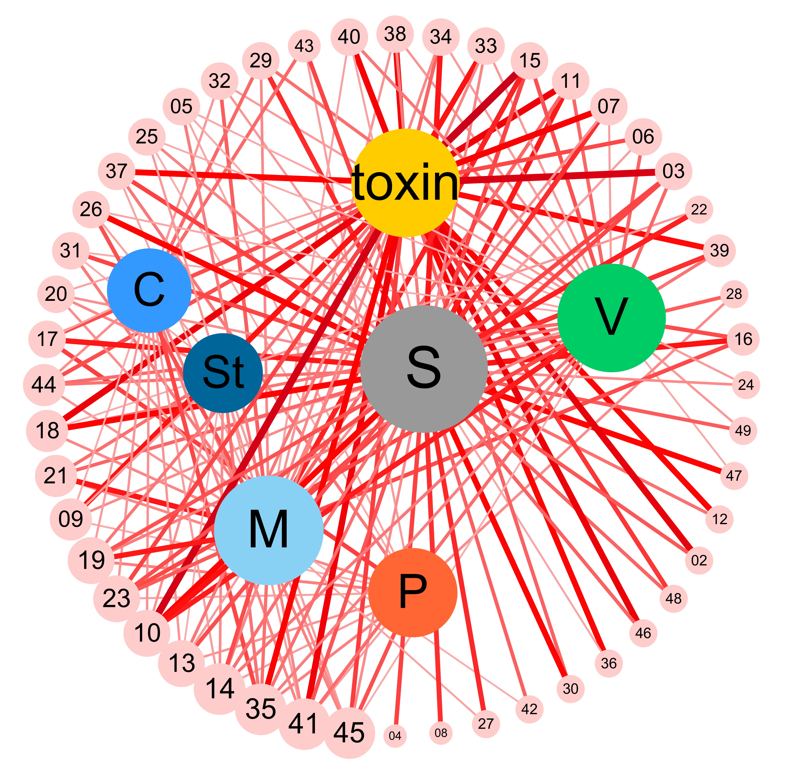
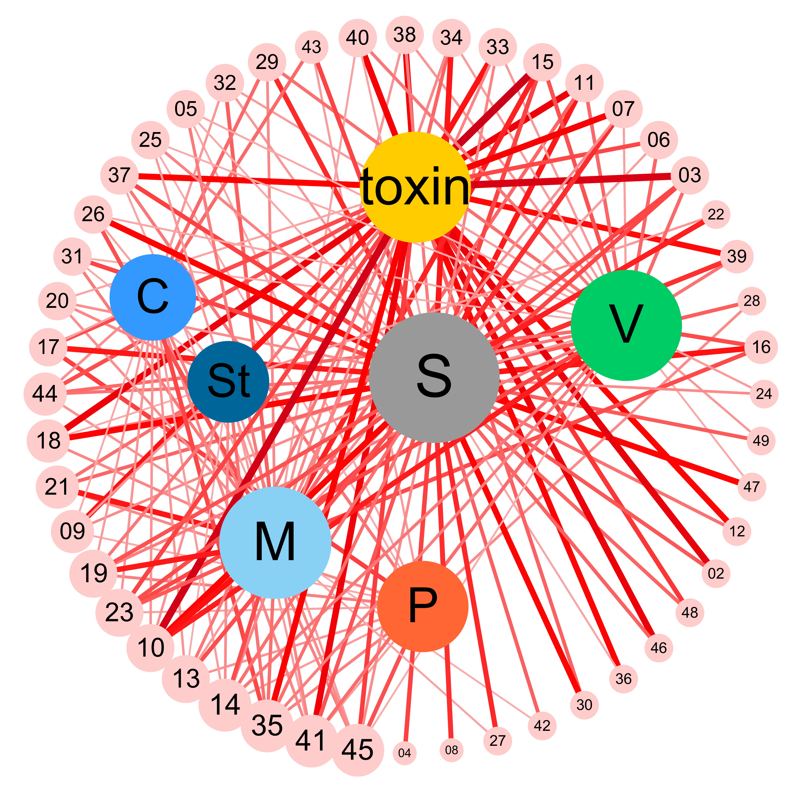
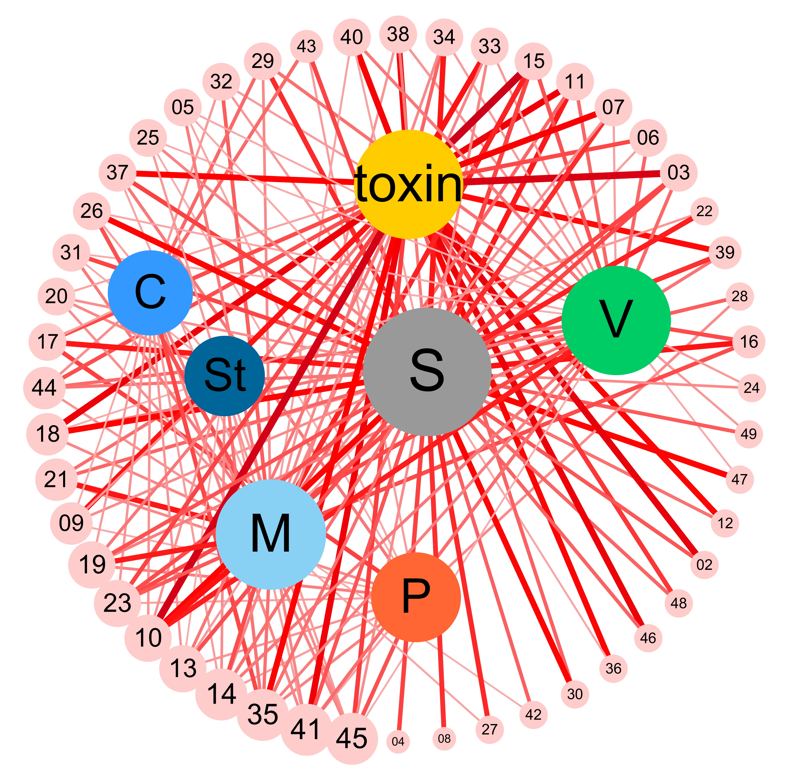

A. Schematic demonstration of the computational method for mining the module-phenotype association. The computation method calculates P, the association index (AI) for module-phenotype association taking the input of regulator’s phenotype, regulator’s hierarchical position on regulation tree, and the proportion of activated conditions in all experiments. B. Module-phenotype association network based on the association index. Outer circle nodes represent modules, and inner nodes represent different phenotypes: M (mycelial growth), C (conidation), P(pigmentation), V(virulence), Toxin (DON and ZEA production), S(sexual reproduction) and St (stress response). The edges denote the association between module and phenotypes, and the line sizes are proportional to AI of the association. C. Correlation analysis of all predicted modules using Pearson Correlation Coefficients (PCC) based on the calculated association index. Modules are clustered using hierarchical clustering, and the heatmap of PCC (scale bar denotes the PCC range) is then produced. The stacked bar graph adjacent to the heatmap summarizes the phenotype association within each module, based on the association index.
